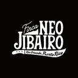

Finca Neo Jibairo
Tobacco farm + bar and tobacco shop (growing; the rolling is done by El Club del Turro) · Río Grande, Puerto Rico
Finca Neo Jibairo appears in La Hoja Boricua, the guide to cigars by Puerto Rican artisans.

Tobacco farm + bar and tobacco shop (growing; the rolling is done by El Club del Turro) · Río Grande, Puerto Rico
Finca Neo Jibairo appears in La Hoja Boricua, the guide to cigars by Puerto Rican artisans.